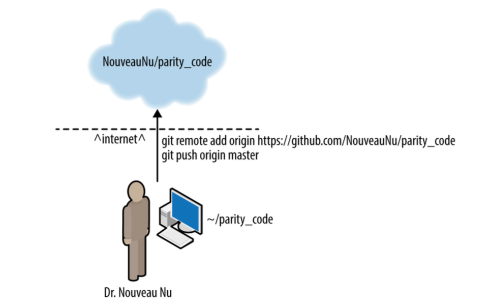

Repositories
We'll focus on GitHub.


Create and push new repo
Cloning a repo
Clone: make local copy of any repository (Git)
Fork: Remote repository connected to/aware of the "upstream" repo it was cloned from (GitHub)
Forking a repo

Collaborative work using GitHub

How does Fran keep local repo up to date with the original?
Do this yourself
- Fork it: at Research-Software-Development-Lessons/analysis_code, click "Fork"
- Clone your fork
$ git clone https://github.com/[you]/analysis_code.git(replace "[you]" with your username)
- Create the alias "upstream" for the remote repo:
$ git remote add upstream \ https://github.com/Research-Software-Development-Lessons/analysis_code.git $ git remote -v
Fetching and merging remote content
- In your cloned local repo, fetch the upstream repo history:
$ git fetch upstream - Merge the "upstream" master branch into your master branch:
$ git merge upstream/master - Look at the changes!
Update your fork
- After merging upstream history, push your work:
(this goes to "origin master")$ git push
What if you (or someone else) made a change in your fork?
-
"pull" = "fetch" and "merge" for "origin master"$ git pull
What about conflicts?
When fetching, merging, and/or pulling remote changes, you may encounter conflicts
To solve: just follow the directions!
(In-class example)
Collaborating on GitHub Best Practices
For one-person projects:
- push and pull (to/from origin)
- use branches, merge into master
For multi-person projects:
- Fork into a personal repo
- Use git fetch/merge to keep updated with upstream
- Push (and pull) to/from origin (your fork on GitHub)
- Contribute changes via pull requests on GitHub
(Some) issues that arise when using GitHub
Pull Requests
Licenses (discussed in another lesson)
Pull Requests
Modern, GitHub-based version of emailing someone a patch
Pull Requests (or PRs) consist of sequences of patches, based on a history of Git commits
Example Pull Request on GitHub

How to contribute a change to someone else's repository
- Fork the repo
- Clone your fork locally
$ git clone ... - Create a new branch for your changes/fix:
$ git checkout -b newfix - Commit and push your changes
$ git commit -am "fixes problem in upstream project" $ git push origin newfix - Submit a Pull Request via GitHub
Create Pull Request

Submitting Pull Requests
Try to submit shorter Pull Requests when possible, as they are easier to review and merge
If the project uses testing, make sure to add a new test (or modify an existing one) to reflect your change. More on tests later!